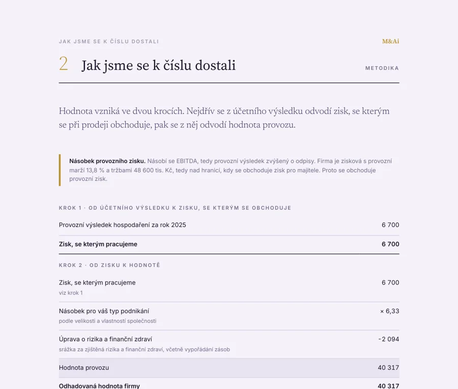
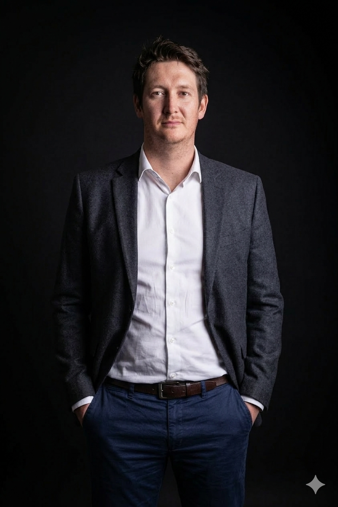
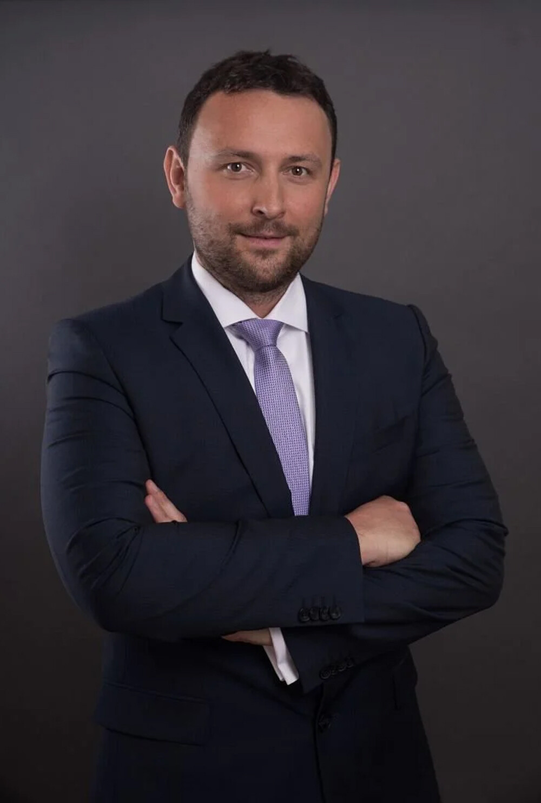
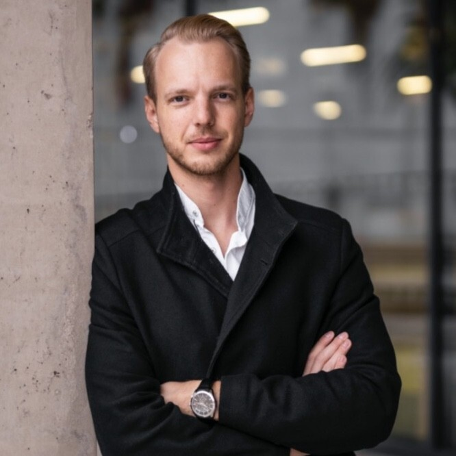

Prodej a nákup firem s oporou v číslech
Firmu oceníme, připravíme na prodej, najdeme protistranu a povedeme jednání až k podpisu.
Podíleli jsme se na transakcích pro
- GECO
- Penta
- Aricoma
- Konsepti
- Premier
- Adria
- Fortuna
- Dr. Max
- Aero
- LineTech
- SAB
- Opatovická
- FutureLife
- ČEZ
Malý tým, který vede transakci od prvního čísla po podpis
Propojujeme kupující a prodávající tak, aby obchod dával smysl oběma stranám. Stavíme na datech z účetnictví, znalosti trhu a osobním vedení celého procesu.
Co pro vás uděláme
Od prvního ocenění přes hledání protistrany až k uzavření obchodu.
-
Nákup
Podle vaší investiční strategie hledáme vhodný cíl a vedeme první fázi jednání. Ukážeme příležitosti, které nejsou na trhu vidět.
-
Prodej
Hledáme kupce, který odpovídá představě prodávajícího. Řídíme celý proces od přípravy podkladů po uzavření transakce.
-
Propojení
Informace předáme těm, kdo je dokážou vyhodnotit. Síť kontaktů otevírá dveře, které jsou jinak zavřené.
-
Ocenění
Podklad pro rozhodnutí, zda prodat či koupit. Metodu volíme podle firmy: násobek zisku, majetek nebo tržby.

Ocenění firmy přímo z účetní závěrky
Nahrajte účetní závěrku nebo zadejte čísla ručně. Kalkulačka vybere metodu a připraví oceňovací zprávu v PDF.
- Zpráva v sazbě M&Ai s hodnotou, rozpětím a postupem krok za krokem.
- Metoda podle firmy. Firma s vlastní budovou se ocení majetkem, ne násobkem ztráty.
- Otázky k výsledku zodpoví asistent nebo poradce M&Ai.
Lidé za M&Ai
David Pavlica
Od retailových financí přes korporátní až k restrukturalizacím. Projekty s dealy v souhrnné hodnotě několika miliard Kč.

Michal Rodek
Zkušenosti z GE Money Bank, Monety a České spořitelny. V M&Ai odpovídá za spolupráci s investičními fondy a partnery.
Josef Kliment
Specialista na finanční účetnictví a přípravu firem na prodej. Ocenění, podklady pro due diligence a exit strategie.

František Tregler
Zkušenosti ze spolupráce s PPF. Zachraňoval a rozvíjel firmy z různých oborů, dnes k tomu využívá moderní technologie.

Václav Gregor
VC investor a mentor pro fundraising. Po prodeji podílu v softwarové firmě řídil akvizice startupů do fondové struktury.
Co potřebujete vědět
Každá transakce začíná rozhovorem
Napište nám, v jaké situaci jste, a ozveme se s návrhem dalšího postupu.
Domluvit konzultaci